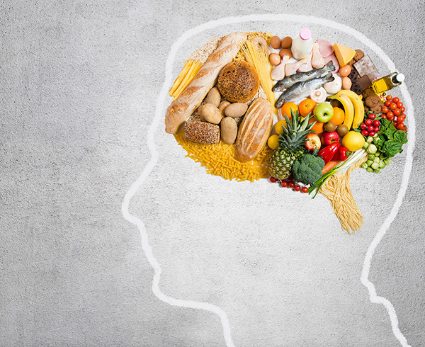
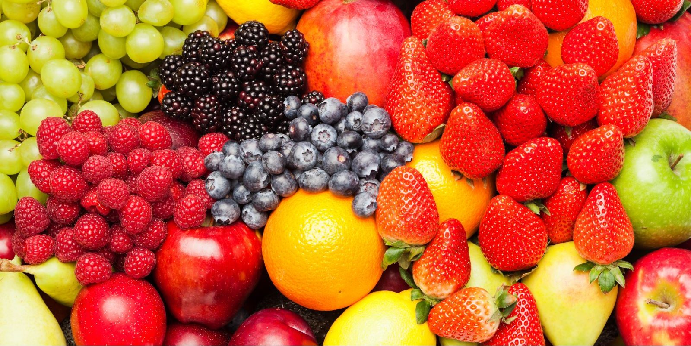

Importance of Nutrition
What is the Issue?
Nutrition is important for people to understand becuase it can affect a person's life for the better or worse. Many people do not realize that proper nutrition plays a major role in development and overall human health. Nutrtion needs to be addressed so others understand the impact it has on daily life.

Why Does This Matter?
Everyone is affected by their nutrition, whether it is healthy or unhealthy. Nutrtition can influence energy levels, performance, and the risk of developing chronic diseases in the future. It is important for people to understand how nutrtion affects their bodies, because feeling tired or unwell may be related to poor eating habits. Not know the affects nutrition has on someone's body can hold them back from their potential.
How can People Help or get Involved?
People can help by first learning how to maintain a healthy diet while meeting basic health standards. They can then adjust their own eating heabits and encourage others to make positive and informed changes as well. Getting other people informend and involved is the best way to teach people from all around to be inspired to fix their bad eating habits so they are able to experience the benefits they get from good eating habits.

Learn More At: A Trusted Nutrition Organization
Featured Highlights
Processed Food
A processed food is any food altered from its natural state during preparation, including washing, cleaning, milling, cutting, heating, pasteurizing, freezing, or packaging. Ultra-processed foods include sweeteners, emulsifiers, and preservatives which contribute to the obesity epidemic and the rising prevalence of chronic diseases like heart disease and diabetes. However, not all processed foods are bad. Processing can be used to make food safe, suitable for use, and preserve food. There needs to be a healthy balance between Ultra-processed foods and processed foods because Ultra-processed food can be included in a healthy diet, but is not necessary.
Sugar Intake and the Brain
Glucose is a form of sugar called natural sugar and the brain uses one-half of all the sugar energy in your body for thinking, memory, and learning. If there isn't enough glucose, your brain's chemical messengers are not produced and communication between neurons breaks down. On the other hand, having too much sugar can have negative impacts on your brain. Sugar found in candy is known as refined sugar, this type of sugar is densely packed, lacks any type of nutrients, and is absorbed quickly. Eating refined sugar needs to be balanced with natural sugar to ensure your body and brain are getting the nutrients and energy they both need.
Dietary Restrictions
Balancing proper nutrition while managing dietary restrictions requires a thoughtful approach. It is important to focus on nutrient-dense alternatives that align with your specific needs. Carefully reading food labels can help identify hidden ingredients that may not fit within your restrictions. Additionally, ensuring an adequate intake of essential nutrients—such as protein, fiber, and healthy fats—is key to maintaining overall health. A well-balanced diet should include a variety of foods in appropriate proportions to support nutritional needs. Consulting a healthcare professional, such as a doctor or registered dietitian, can provide personalized guidance and help ensure you are meeting your dietary requirements while maintaining a healthy and balanced lifestyle.
About My Work
The purpose of this website is to inform people about good nutrition and incourage them to want to change their own nutrition to make it better. This website goes into a deep dive of all the aspects that play a role in nutrition even when contrained do to dietary restrictions. This site will explore statistics and the most thorough way to optimize the benefits of having a well balance nutrtion habit.
Nutrition affects people in so many ways, and it is very important for people to understand those affects so that they may experirence the good benefits with nutrition when their nutrition is healthy.
Created by: Reese Armstrong